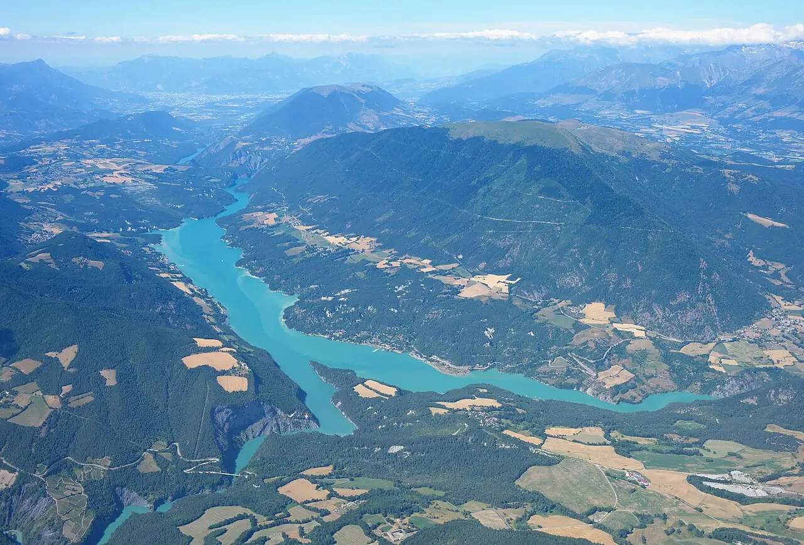

Lac de Monteynard — Treffort
Isère, France · kitesurf, windsurf, paddle

Lac de barrage au sud de Grenoble, réputé pour sa brise thermique régulière l’été, rare en montagne. Les passerelles himalayennes qui l’enjambent font aussi sa célébrité.
- Lieu
- Isère, France
- Niveau
- Intermédiaire
- Activités
- kitesurf, windsurf, paddle
- Type d'eau
- lake
- Coordonnées
- 44.91, 5.67 (position approximative du secteur)
Dangers à connaître
- Vent thermique qui forcit vite et devient rafaleux.
- Eau fraîche : combinaison conseillée.
- Niveau d’eau variable, lié à l’exploitation du barrage.
Le conseil d'Ocean Buddy
Arrive en fin de matinée : la brise thermique s’installe en général en début d’après-midi par beau temps.
Ouvrir dans Ocean Buddy Télécharger sur l'App Store
Source : Fiche Ocean Buddy · septembre 2026 · à vérifier localement.